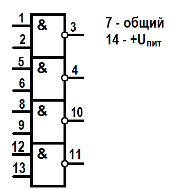

Микросхема K561ЛА7
Микросхема К561ЛА7 выпускается в пластмассовом корпусе с двухрядным расположением 14 штыревых выводов. К561ЛА7 выполняет логическую функцию И-НЕ, изготавливается на основе КМОП-структур. В составе К561ЛА7 четыре 2-входовых логических элемента “И-HЕ”.

Рис. 1 - Обозначение на схеме и назначение выводов микросхемы К561ЛА7
| Наименование параметра | Обозначение | Значение |
|---|---|---|
| Напряжение питания | Uпит | 3...18 В |
| Входные токи низкого и высокого уровней | <0,3 мкА | |
| Выходное напряжение низкого уровня | U0max | <2,9 В |
| Выходное напряжение высокого уровня | U1min | >7,2В |
| Ток потребеления при лог. "0" и Uпит=18 В | Iпот0 | 15 мA |
| Ток потребеления при лог. "1" и Uпит=18 В | Iпот1 | 30 мA |
| Выходной ток | Iвых | 42 мA |
| Время задержки распространения сигнала | tзад расп | 80 нС |
| Диапазон рабочих температур | Tраб | -45...+85°С |
Аналоги микросхемы К561ЛА7
CD4011A, CD4011, HEF4011BP, HCF4011BE, 564ЛА7, К176ЛА7,164ЛА7